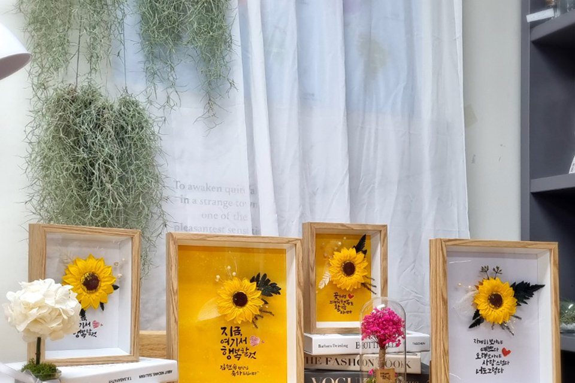
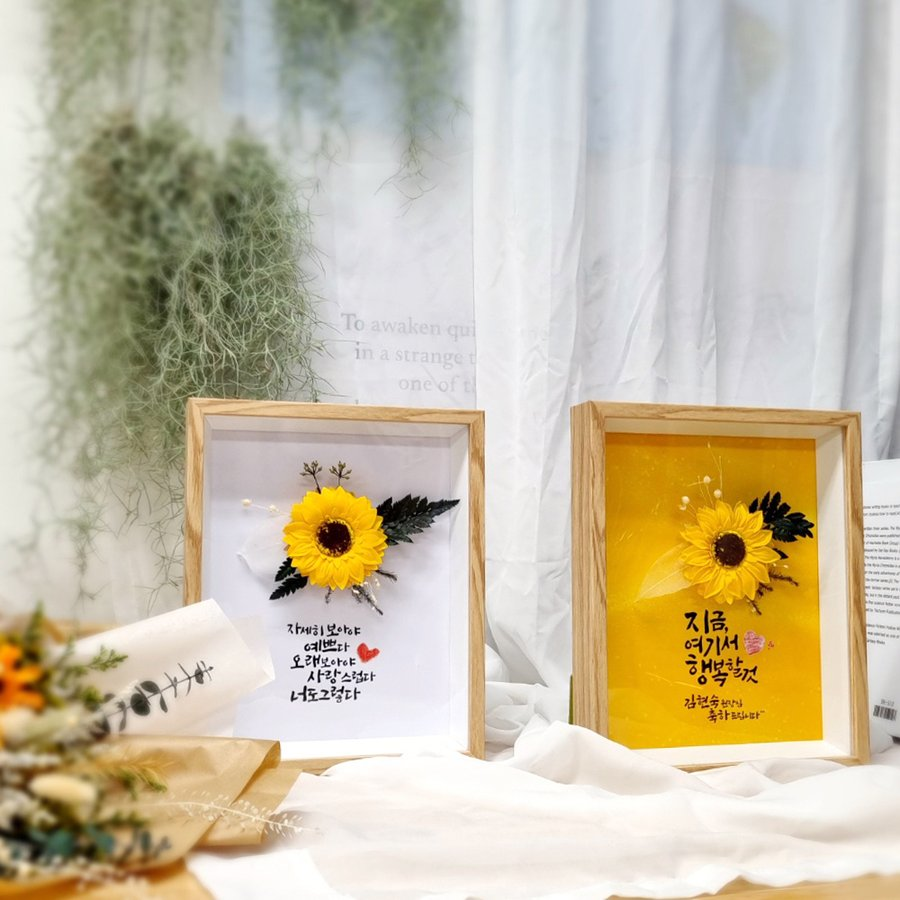
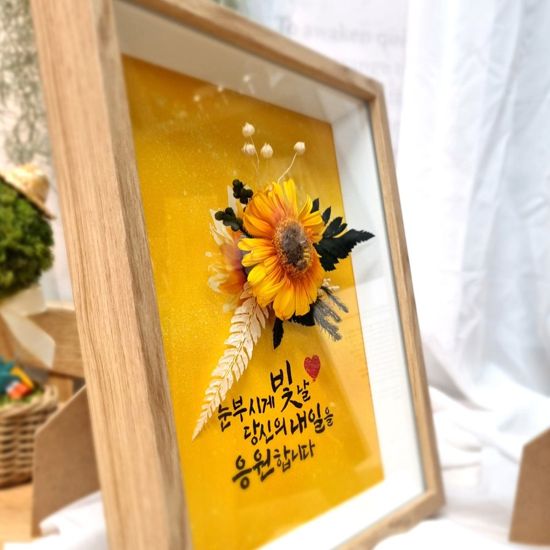

화분을 다시 생각해봐야 하는 이유
집들이나 개업 선물을 정할 때 가장 먼저 떠오르는 게 화분입니다. 다만 기준을 세워두고 보면 조건이 꽤 까다로운 선물이에요. 관리가 소홀해지는 순간 표가 나고, 자리를 많이 차지하는 편이라 원룸이나 신혼집처럼 공간이 넉넉하지 않은 곳에서는 부담이 될 수 있습니다.
집들이·개업 선물 고를 때 확인해볼 세 가지
선물을 정하기 전에 이 세 가지만 짚어보면 고민이 훨씬 줄어들어요.
- 손이 많이 가지는 않는가 — 관리에 신경 써야 하는 선물은 그 자체로 부담이 됩니다
- 두었을 때 공간을 넉넉히 남기는가 — 원룸·신혼집처럼 공간이 넉넉하지 않을 수 있어요
- 별도 스타일링 없이도 그 집과 어울리는가 — 안 예쁘면 결국 창고행이 되기 쉬워요
해바라기 액자가 이 세 가지를 지키는 방식
테차 해바라기 액자는 프리저브드 꽃을 액자 안에 담아서 물을 줄 필요가 없어요. 벽에 거는 형태라 바닥이나 협탁 자리를 따로 차지하지 않고요. 배경과 사이즈는 각각 두 가지라 받는 집의 톤과 공간 크기에 맞춰 고르실 수 있어요.
- 배경 — 맑은배경(화이트톤 인테리어에), 황금배경(우드톤이나 클래식한 공간에)
- 사이즈 — A4(원룸·데스크처럼 작은 공간에), A3(거실·매장 입구처럼 존재감을 주고 싶은 곳에)

해바라기를 선물로 고르는 이유 — 재물운, 그리고 의외의 사실
해바라기는 재물운을 상징하는 꽃이라 예로부터 집들이·개업 선물로 즐겨 쓰였습니다. 여기에 덧붙일 만한 사실이 하나 있는데, 해바라기의 "해를 따라 움직인다"는 이미지는 어린 개체에서만 관찰되는 특징이고, 다 자란 뒤에는 한 방향으로 고정되는 경우가 대부분이라고 해요. 한번 자리를 잡으면 흔들리지 않는다는 점도, 오래 두고 보는 선물과 통하는 부분입니다.

자주 묻는 질문
Q. 조화인가요, 생화인가요?
A. 실제 생화를 특수 가공한 프리저브드 꽃이에요. 조화가 아니라 진짜 꽃을 오래가는 상태로 만든 거예요.
Q. 빛이 잘 안 드는 곳에 걸어도 되나요?
A. 네, 괜찮아요. 프리저브드 꽃은 직사광선에 오래 노출되면 색이 바랠 수 있어서, 오히려 빛이 강하지 않은 자리가 관리에는 더 유리합니다.
정리하면
체크리스트를 다시 보면 손이 가는가, 자리를 차지하는가, 인테리어에 어울리는가 이 세 가지입니다. 셋 다 걸리는 데가 없다면 그 선물은 오래 남습니다. 해바라기 액자는 이 기준을 통과하면서 재물운이라는 뜻까지 얹은 선택지예요.